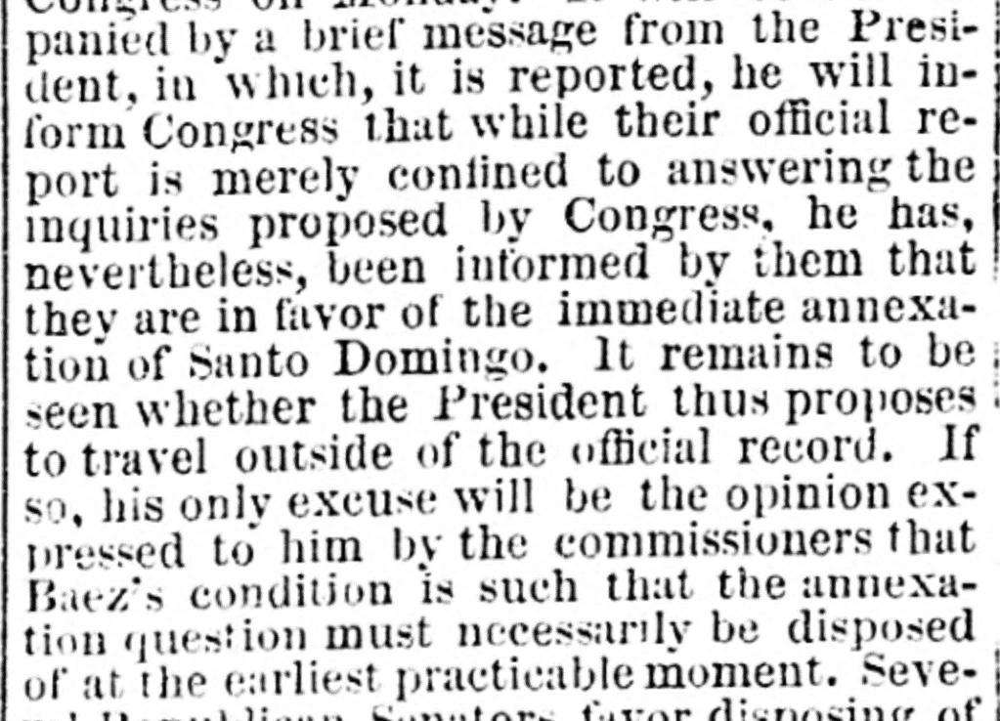
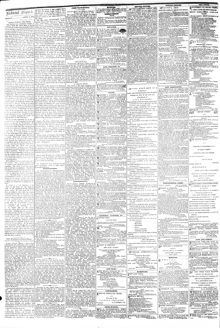

Several Republican Senators l'avor disposing of the question by passingVarios senadores republicanos favorecen disponer de la cuestión mediante la aprobación
The Daily Dispatch. Richmond [Va.], April 3, 1871. Page 2. View the originalVer el original


See the full pageVer la página completaThe commissioners expressed the opinion to the President that Baezs condition is such that the annexation question must necessarily be disposed of at the earliest practicable moment. Several Republican Senators favor disposing of the question by passing a resolution now declaring Congress opposed to annexation, and thus obviating the negotiation and subsequent discussion of a new treaty; a Republican Senator has prepared such a resolution and is only awaiting events before offering it.Los comisionados expresaron al presidente la opinión de que la condición de Báez es tal que la cuestión de la anexión debe resolverse en el plazo más breve posible. Varios senadores republicanos favorecen resolver la cuestión aprobando ahora una resolución que declare al Congreso opuesto a la anexión, evitando así la negociación y la discusión posterior de un nuevo tratado; un senador republicano ha preparado esa resolución y solo espera los acontecimientos para presentarla.
FULL TEXT:TEXTO COMPLETO:
ST. DOMINGO REPORT.INFORME DE SANTO DOMINGO.
The report of the Santo Domingo commissioners was read in the Cabinet meeting to-day, and will probably be submitted to Congress on Monday. It will be accompanied by a brief message from the President, in which, it is reported, he will inform Congress that while their official report is merely confined to answering the inquiries proposed by Congress, he has, nevertheless, been informed by them that they are in favor of the immediate annexation of Santo Domingo. It remains to be seen whether the President thus proposes to travel outside of the official record. If so, his only excuse will be the opinion expressed to him by the commissioners that Baez's condition is such that the annexation question must necessarily be disposed of at the earliest practicable moment. Several Republican Senators favor disposing of the question by passing a resolution now declaring Congress opposed to annexation, and thus obviate the negotiation and subsequent discussion of a new treaty. A Republican Senator has prepared such a resolution, and is only awaiting events before offering it.El informe de los comisionados de Santo Domingo fue leído en la reunión del Gabinete hoy, y probablemente será presentado al Congreso el lunes. Será acompañado de un breve mensaje del Presidente, en el cual, se informa, informará al Congreso que aunque su informe oficial está meramente limitado a responder las preguntas propuestas por el Congreso, él, sin embargo, ha sido informado por ellos de que están en favor de la anexión inmediata de Santo Domingo. Queda por ver si el Presidente se propone así viajar fuera del registro oficial. Si es así, su única excusa será la opinión que le expresaron los comisionados de que la condición de Báez es tal que la cuestión de la anexión debe necesariamente ser resuelta en el momento más temprano practicable. Varios Senadores republicanos favorecen resolver la cuestión aprobando ahora una resolución que declare al Congreso opuesto a la anexión, y así obviar la negociación y subsecuente discusión de un nuevo tratado. Un Senador republicano ha preparado tal resolución, y solo está esperando los acontecimientos antes de ofrecerla.